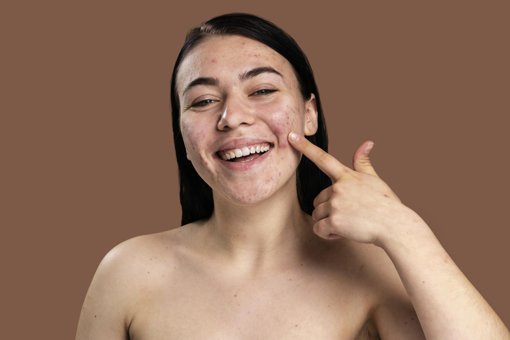
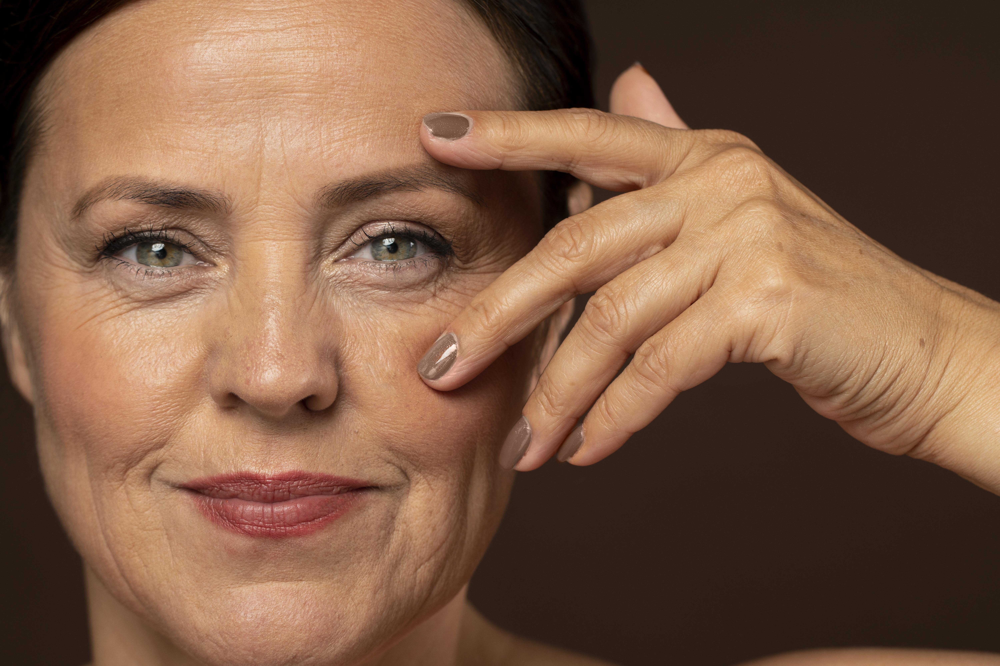

Acne / Pigmentation
Fade Acne Marks Faster
Fade Away
Clinical insights. Targeted solutions. Real results.






Acne may go away, but the marks it leaves behind often remain much longer. For many people in Malaysia, Singapore, and other tropical regions, acne marks and dark spots, also known as post-inflammatory hyperpigmentation, are one of the most frustrating skin concerns.
The reality is that most people are using the wrong approach. Some are too aggressive, while others are inconsistent. Both lead to slow or ineffective results.
This guide explains a clinically structured routine to fade acne marks faster, safely, and effectively, without damaging your skin barrier.
Acne marks are not the same as acne. After inflammation from pimples or breakouts, the skin produces excess melanin as part of the healing process. This results in dark spots, uneven tone, and lingering pigmentation.
These marks can last for months or even years if not treated correctly.
In Malaysia and Singapore, skin is constantly exposed to high UV levels, humidity, and heat. This combination increases oil production, triggers inflammation, and slows down the fading process of pigmentation.
Even when acne is gone, the marks often remain due to continuous environmental exposure.
One of the biggest mistakes is skipping sunscreen. UV exposure darkens pigmentation daily, even indoors.
Over-exfoliating is another issue. Using too many acids weakens the skin barrier and worsens marks instead of improving them.
Using random or incompatible products reduces effectiveness and can irritate the skin.
Ignoring inflammation is also critical. If the skin is still irritated, pigmentation will persist.
To fade acne marks effectively, your routine must focus on three key principles: controlling inflammation, brightening pigmentation, and protecting the skin from further damage.
A proper cleanser removes oil, bacteria, and impurities while maintaining the skin barrier. Clean skin allows active ingredients to penetrate effectively.
For acne-prone skin, a gentle exfoliating cleanser helps clear pores and prevent new breakouts that can lead to more marks.
Recommended options include Oil Clarifying Cleanser for deep pore cleansing, and Gentle Purifying Cleanser for sensitive or recovering skin.
This is the most important step. Effective treatment requires ingredients that reduce melanin production, promote skin renewal, and maintain hydration.
Clinically proven ingredients include Vitamin C for brightening, Niacinamide for tone correction and anti-inflammation, Lactic Acid for gentle exfoliation, and Hyaluronic Acid for hydration.
Fade Away is formulated to target these concerns by reducing pigmentation, improving uneven skin tone, and enhancing overall skin clarity.
Balanced skin heals faster. If your skin is irritated or unstable, pigmentation will take longer to fade.
A balancing serum helps calm inflammation, regulate oil production, and strengthen the skin barrier.
Oil Balancing Hydration supports skin stability and prevents further breakouts and marks.
Sunscreen is non-negotiable. Without protection, dark spots will continue to darken and treatment becomes ineffective.
Daily protection prevents UV-induced pigmentation and preserves your results.
Matte BroadSpectrum SunDefence provides lightweight protection suitable for humid climates.
At night, the skin repairs itself. Supporting this process can improve results and speed up fading.
Renewal Night Cream helps enhance skin renewal, improve texture, and reduce pigmentation over time.
Morning routine: cleanse, apply Fade Away, apply Oil Balancing Hydration, and finish with sunscreen.
Night routine: cleanse, apply Fade Away, and optionally use Renewal Night Cream.
Visible brightening may appear within two to four weeks. Noticeable fading typically occurs between four to eight weeks. Significant improvement is usually seen within eight to twelve weeks.
Consistency is more important than intensity.
In most cases, acne marks can fade significantly, and mild pigmentation can disappear completely with the right routine.
Deeper pigmentation may take longer but can still be improved with consistent treatment.
Fading acne marks is not about using more products. It is about using the right combination consistently.
When your routine is structured correctly, your skin gradually becomes clearer, more even, and healthier.
If you want to improve acne marks effectively, begin with a proper cleanser, use targeted treatment, and protect your skin daily.
Pearls & Dews — Clinical, minimal, effective skincare.
If you have oily skin, you’ve probably been told that your breakouts are caused by excess oil.
So you wash your face more often, use stronger cleansers, avoid moisturisers, and try to dry out your skin. But despite all that, the acne keeps coming back.
This is one of the most common skin frustrations in Malaysia, Singapore, and other humid regions.
The truth is that oil is only part of the problem. In many cases, your breakouts are not caused by too much oil, but by an imbalance in your skin.
This guide explains the real causes behind oily, acne-prone skin and a clinically effective routine to fix it.
Oily skin means your sebaceous glands produce more oil. However, acne does not happen just because of oil alone.
Breakouts occur when excess oil, dead skin buildup, bacteria, and inflammation combine. Even if oil is reduced, the other factors can still trigger acne.
Your skin can be oily on the surface but dehydrated underneath.
When your skin lacks water, it compensates by producing more oil. This leads to clogged pores, increased breakouts, and persistent acne despite using oil-control products.
This condition is known as oily-dehydrated skin and is extremely common in tropical climates.
Hot and humid environments increase sweating and oil production. Many people respond by over-cleansing, skipping moisturisers, and overusing exfoliants.
This damages the skin barrier and makes acne worse instead of better.
Your skin may be imbalanced if it feels tight after cleansing, becomes oily quickly, shows both dryness and breakouts, or does not improve despite strong products.
Over-cleansing strips natural oils and triggers more oil production.
Using harsh acne products increases irritation.
Skipping hydration weakens the skin barrier.
Focusing only on oil instead of balance leads to recurring breakouts.
To improve oily acne-prone skin, your routine must cleanse effectively, balance oil production, hydrate the skin, and reduce inflammation.
You need a cleanser that removes oil and clears pores without stripping your skin.
Oil Clarifying Cleanser helps deep clean pores, remove buildup, and prevent clogging.
After cleansing, your skin needs to stabilise.
Oil Balancing Hydration helps regulate oil production, reduce redness, and strengthen the skin barrier.
Fade Away helps reduce acne marks, brighten skin tone, and improve clarity.
Sunscreen is essential even for oily skin.
Matte BroadSpectrum SunDefence provides lightweight protection suitable for humid climates.
Rescue Recovery Cream helps repair the barrier and reduce irritation.
Morning: Cleanser → Oil Balancing Hydration → Fade Away → Sunscreen
Night: Cleanser → Oil Balancing Hydration → Fade Away
Results typically appear within two to eight weeks with consistent use.
Oily skin is not the problem. Imbalance is.
A structured routine will gradually restore clarity and control breakouts.
Pearls & Dews — Clinical, minimal, effective skincare.
Acne is one of the most common skin concerns, yet one of the most misunderstood. Many people with acne-prone skin are doing too much by using too many products, over-exfoliating, and constantly switching routines.
Despite all the effort, breakouts continue. The problem is not a lack of products, but a lack of structure.
This guide explains a clinically structured routine designed to reduce breakouts, prevent clogged pores, fade acne marks, and strengthen your skin barrier.
Acne occurs when excess oil, dead skin buildup, bacteria, and inflammation combine. An effective routine must address all of these factors, not just oil.
Many routines focus only on drying out acne while ignoring hydration and skin barrier health. This leads to irritation, increased oil production, and worsening breakouts.
The correct approach is balance, not aggression.
Cleansing removes excess oil, dirt, and dead skin cells. The key is to cleanse without stripping your skin.
Oil Clarifying Cleanser helps unclog pores, remove buildup, and reduce future breakouts.
Use twice daily with gentle massage and rinse thoroughly.
After cleansing, your skin needs to stabilise. Without this step, oil production increases and acne persists.
Oil Balancing Hydration helps regulate oil, reduce redness, and strengthen the skin barrier.
Balanced skin leads to fewer breakouts.
This is the most important step. You need ingredients that reduce inflammation, improve skin renewal, and prevent long-term marks.
Fade Away helps reduce acne marks, improve uneven skin tone, and support clearer skin.
Skipping moisturiser is a major mistake. Without hydration, your skin becomes dehydrated, produces more oil, and worsens breakouts.
Rescue Recovery Cream helps repair the skin barrier, reduce irritation, and maintain hydration.
Sunscreen is essential for acne-prone skin. Without it, acne marks darken, inflammation worsens, and healing slows down.
Matte BroadSpectrum SunDefence provides lightweight daily protection suitable for humid climates.
Morning: Cleanser, Oil Balancing Hydration, Fade Away, Sunscreen.
Night: Cleanser, Oil Balancing Hydration, Fade Away, optional moisturiser.
If your skin is stable, Renewal Night Cream can be added to improve skin texture and support renewal.
Within one to two weeks, oil and irritation may reduce. Within two to four weeks, breakouts decrease. Within four to eight weeks, skin becomes clearer.
Consistency is key.
Over-exfoliating damages the skin barrier.
Using too many products increases irritation.
Skipping sunscreen reverses progress.
Changing routines too often prevents results.
Acne-prone skin does not need more products. It needs the right structure.
A consistent, balanced routine will gradually improve your skin and reduce breakouts.
Pearls & Dews — Clinical, minimal, effective skincare.
Acne treatments can be effective, but they often come with a cost. If your skin suddenly feels tight, dry, irritated, or more sensitive than usual, your skin barrier is likely compromised.
This is a common issue, especially for those using strong acne products, exfoliating acids, or retinol.
The problem is not the treatment itself, but what happens after. If your skin barrier is not repaired properly, you may experience more breakouts, redness, and slower healing.
Your skin barrier is the outermost layer of your skin. It protects against environmental damage, prevents moisture loss, and keeps your skin balanced.
When it is healthy, your skin appears smooth, hydrated, and calm. When it is damaged, your skin becomes reactive and unstable.
Your skin barrier may be compromised if you experience burning or stinging when applying products, increased sensitivity, redness, dryness with oiliness, or breakouts that do not heal properly.
Many acne treatments work by exfoliating the skin, reducing oil, and increasing cell turnover. When overused, these processes strip natural oils and weaken your skin’s protective layer.
This is especially problematic in tropical climates, where heat and humidity can increase irritation.
Continuing strong actives while your skin is irritated will worsen the condition.
Over-cleansing strips essential lipids and slows healing.
Skipping moisturiser prevents your skin from repairing itself.
Using too many products overwhelms your skin instead of helping it.
The goal is to reduce irritation, restore hydration, and rebuild protection.
Your cleanser should remove impurities while maintaining hydration.
Gentle Purifying Cleanser helps cleanse the skin without stripping it, while soothing and calming irritation.
After cleansing, your skin needs to stabilise.
Oil Balancing Hydration helps reduce redness, regulate oil production, and support the skin barrier.
This is the most important step.
Rescue Recovery Cream is designed to repair damaged skin, reduce inflammation, and promote healing.
Key ingredients such as Centella Asiatica, Vitamin B5, and Squalane help restore your skin’s protective function.
A damaged skin barrier is more vulnerable to UV damage and pigmentation.
Matte BroadSpectrum SunDefence provides essential protection while maintaining a lightweight feel suitable for daily use.
Morning: Gentle Cleanser, Oil Balancing Hydration, Rescue Recovery Cream, Sunscreen.
Night: Gentle Cleanser, Oil Balancing Hydration, Rescue Recovery Cream.
Within a few days, irritation may reduce. Within one to two weeks, hydration improves. Within two to four weeks, the skin barrier is significantly restored.
Consistency is essential for full recovery.
Only reintroduce active treatments when your skin no longer stings, redness has reduced, and your skin feels stable.
Start slowly and monitor your skin’s response.
A damaged skin barrier can actually worsen acne. When your skin is compromised, inflammation increases, oil production becomes unstable, and breakouts become more frequent.
Healthy skin leads to better acne control.
Repairing your skin barrier is not about using more products. It is about using the right ones consistently and allowing your skin to recover.
With proper care, your skin becomes stronger, calmer, and more resilient.
Pearls & Dews — Clinical, minimal, effective skincare.
You’ve tried brightening serums, spot correctors, and multiple skincare routines, yet your dark spots remain. This is one of the most common frustrations, especially in Malaysia, Singapore, and tropical climates.
The issue is not always the product. In most cases, it is the approach.
Dark spots, also known as post-inflammatory hyperpigmentation, require a structured and consistent routine to improve effectively.
Dark spots form when your skin produces excess melanin after inflammation. This can be triggered by acne, sun exposure, irritation, or skin damage.
Without proper care, these marks can remain for months and may even become darker over time.
In hot and humid environments, your skin is constantly exposed to high UV levels. This continuously stimulates melanin production and slows down the fading process.
Even minimal sun exposure can undo your progress.
One of the main reasons is inconsistent sunscreen use. Without daily protection, UV exposure darkens pigmentation and reverses improvement.
Using the wrong ingredients is another issue. Not all brightening products contain effective concentrations or clinically proven actives.
Ongoing inflammation also prevents healing. If your skin is still irritated or breaking out, pigmentation will persist.
Over-exfoliating can worsen the condition by damaging the skin barrier and increasing sensitivity.
Finally, lack of consistency delays results. Pigmentation takes time to fade, and switching products too often disrupts progress.
To improve pigmentation effectively, your routine must reduce melanin production, promote skin renewal, control inflammation, and protect against UV damage.
A proper cleanser removes oil, impurities, and buildup, allowing treatment products to work effectively.
Oil Clarifying Cleanser helps clear pores, while Gentle Purifying Cleanser is suitable for sensitive or recovering skin.
This is the most important step.
Fade Away is formulated to reduce pigmentation, improve uneven skin tone, and enhance skin clarity.
Key ingredients such as Vitamin C, Niacinamide, and Lactic Acid help inhibit melanin production, support gentle renewal, and maintain hydration.
Balanced skin heals faster and reduces the risk of new pigmentation forming.
Oil Balancing Hydration helps regulate oil, reduce redness, and support the skin barrier.
Sunscreen is essential. Without it, dark spots will continue to darken and treatments will be less effective.
Matte BroadSpectrum SunDefence provides daily protection while remaining lightweight for humid climates.
At night, your skin naturally repairs itself.
Renewal Night Cream helps improve texture, enhance skin renewal, and support long-term results.
Morning: Cleanser, Fade Away, Oil Balancing Hydration, Sunscreen.
Night: Cleanser, Fade Away, optional Renewal Night Cream.
Within two to four weeks, skin may appear brighter. Within four to eight weeks, dark spots begin to fade. Significant improvement typically occurs within eight to twelve weeks.
Consistency is essential.
In many cases, dark spots can fade significantly, and mild pigmentation may disappear completely. Deeper pigmentation may take longer but can still improve with proper care.
Skipping sunscreen reverses progress.
Using too many active ingredients causes irritation.
Expecting fast results leads to inconsistency.
Ignoring skin barrier health slows healing.
Dark spots do not fade overnight. With the correct routine and consistent care, your skin can gradually become clearer and more even.
The key is not using more products, but using the right ones consistently.
Pearls & Dews — Clinical, minimal, effective skincare.
Retinol is one of the most effective ingredients in skincare. It is widely used to improve skin texture, reduce fine lines, fade pigmentation, and support overall skin renewal.
However, many beginners experience irritation, dryness, or breakouts when using retinol. This is not because retinol does not work, but because it is often used incorrectly.
This guide explains how to use retinol safely and effectively, especially in tropical climates like Malaysia and Singapore.
Retinol is a form of Vitamin A that increases skin cell turnover and stimulates collagen production. This helps improve skin texture, reduce wrinkles, and brighten the complexion.
When used correctly, retinol can significantly improve overall skin quality.
Retinol is a powerful active ingredient. Using it too frequently, applying too much, or combining it with strong acids can overwhelm your skin.
This often leads to redness, peeling, dryness, and a weakened skin barrier.
Common signs include burning or stinging, excessive dryness, flaking, and increased sensitivity.
Mild dryness is normal, but strong irritation indicates that your skin needs adjustment.
The key to retinol is gradual introduction and proper support.
Begin with two to three times per week. Allow your skin to adjust before increasing frequency.
Using retinol daily too soon can damage your skin barrier.
Retinol increases sensitivity to sunlight and should only be applied at night.
This allows your skin to repair and renew without UV exposure.
A small amount is sufficient for the entire face. Using more will not improve results and will increase irritation.
Hydration is essential when using retinol.
Rescue Recovery Cream helps reduce irritation, repair the skin barrier, and maintain moisture balance.
Avoid using retinol together with strong exfoliating acids or harsh acne treatments in the same routine.
This prevents overloading your skin.
Retinol makes your skin more sensitive to UV exposure.
Without sunscreen, your skin becomes more prone to damage and pigmentation.
Matte BroadSpectrum SunDefence provides lightweight daily protection suitable for tropical climates.
Renewal Night Cream is formulated with encapsulated retinol for a gentler release, combined with Vitamin C and peptides.
This helps improve skin texture, reduce fine lines, and support skin renewal while minimising irritation.
Morning: Cleanser, hydration, sunscreen.
Night (retinol days): Cleanser, Renewal Night Cream, moisturiser if needed.
Night (non-retinol days): Cleanser, hydration, moisturiser.
During the first two weeks, mild dryness or sensitivity may occur.
By four weeks, skin begins to adjust and texture improves.
By six to eight weeks, visible improvements in tone and smoothness can be seen.
Retinol can cause temporary purging as skin cell turnover increases. This typically lasts two to four weeks.
If irritation persists longer, your skin may be overwhelmed rather than purging.
In hot and humid environments, use lightweight layers and avoid heavy products during the day.
Consistent sunscreen use is essential to prevent sensitivity and pigmentation.
Using retinol too frequently too soon.
Skipping moisturiser and hydration.
Combining too many active ingredients.
Not using sunscreen.
Retinol is highly effective when used correctly. The key is to start slowly, support your skin, and stay consistent.
With proper use, retinol can significantly improve skin texture, tone, and overall appearance.
Pearls & Dews — Clinical, minimal, effective skincare.
Aging is a natural process, but when your skin begins to show signs earlier than expected, it may be experiencing accelerated aging.
If you are noticing fine lines, dullness, loss of firmness, or uneven skin tone, your skin may be aging faster than it should.
This is increasingly common in Malaysia, Singapore, and tropical climates where environmental stress plays a significant role.
Accelerated aging occurs when external factors such as UV exposure, pollution, stress, and improper skincare cause the skin to age faster than its natural rate.
This leads to early wrinkles, pigmentation, and loss of elasticity.
Fine lines appearing earlier than expected, especially around the eyes and forehead.
Loss of firmness and elasticity, resulting in less “bouncy” skin.
Dull and uneven skin tone due to slower cell turnover.
Increased pigmentation and dark spots caused by sun exposure.
Slower healing and recovery from breakouts or irritation.
High UV exposure is the primary cause of premature aging, contributing to collagen breakdown and pigmentation.
Heat and humidity increase inflammation and affect skin balance.
Environmental stress accelerates oxidative damage over time.
Sun exposure breaks down collagen and leads to wrinkles and pigmentation.
Oxidative stress from pollution and environmental factors damages skin cells.
Dehydration reduces skin elasticity and enhances fine lines.
Poor skincare habits weaken the skin barrier and accelerate visible aging.
To maintain youthful skin, your routine must protect, repair, and stimulate collagen production.
A gentle cleanser removes impurities while maintaining hydration and protecting the skin barrier.
Gentle Purifying Cleanser helps cleanse without causing dryness or irritation.
Antioxidants protect the skin from environmental damage and improve overall skin tone.
Fade Away helps brighten the skin, reduce pigmentation, and improve clarity.
Collagen loss is a major cause of aging.
Wrinkle Relaxer helps reduce expression lines, improve firmness, and enhance skin elasticity.
Skin renewal slows down with age.
Renewal Night Cream helps improve texture, reduce fine lines, and support skin regeneration.
Mature skin requires additional support to maintain elasticity and hydration.
Uplifting Replenishing Cream helps nourish the skin and improve overall firmness.
Sunscreen is essential to prevent further damage and maintain results.
Matte BroadSpectrum SunDefence provides daily protection against UV exposure.
Morning: Cleanser, Fade Away, Wrinkle Relaxer, Sunscreen.
Night: Cleanser, Wrinkle Relaxer, Renewal Night Cream, moisturiser if needed.
Within two to four weeks, skin appears more hydrated and radiant.
Within four to eight weeks, texture improves and fine lines become less visible.
Within eight to twelve weeks, overall skin firmness and tone improve.
Aging cannot be completely stopped, but it can be slowed down significantly.
With the right routine, your skin can look healthier, firmer, and more youthful.
Skipping sunscreen accelerates aging.
Using too many products causes irritation.
Ignoring hydration weakens the skin barrier.
Inconsistent routine delays results.
Premature aging is influenced by environment, lifestyle, and skincare habits.
A consistent routine focused on protection, repair, and renewal can significantly slow down visible aging.
Pearls & Dews — Clinical, minimal, effective skincare.
If your skin reacts easily, turns red, or feels uncomfortable after using skincare, you may have sensitive or easily irritated skin.
This condition is common in Malaysia, Singapore, and tropical climates where heat, humidity, and environmental stress constantly affect the skin.
Sensitive skin is not about using more products. It is about using the right approach to calm, repair, and protect the skin barrier.
Sensitive skin is a condition where the skin barrier is weakened and more reactive to external factors.
This makes your skin more vulnerable to irritation, inflammation, and environmental stress.
Redness or flushing after applying products.
Burning or stinging sensations.
Dryness or tightness.
Breakouts after trying new products.
Skin that reacts unpredictably.
High temperatures, humidity, and pollution can disrupt the skin barrier and increase irritation.
Frequent cleansing and sweating can further weaken the skin’s natural protection.
Using too many active ingredients overwhelms the skin.
Over-cleansing strips natural oils and worsens sensitivity.
Skipping moisturiser prevents barrier repair.
Changing products too frequently prevents the skin from stabilising.
The goal is to calm irritation, restore hydration, and strengthen the skin barrier.
Your cleanser should remove impurities without stripping the skin.
Gentle Purifying Cleanser helps cleanse while soothing and maintaining hydration.
After cleansing, your skin needs to stabilise.
Oil Balancing Hydration helps reduce redness, regulate oil, and support the skin barrier.
This is the most important step.
Rescue Recovery Cream helps repair the skin barrier, reduce inflammation, and promote healing.
Key ingredients such as Centella Asiatica, Vitamin B5, and Squalane support long-term skin stability.
Sensitive skin is more vulnerable to environmental damage.
Matte BroadSpectrum SunDefence provides daily protection while remaining lightweight and suitable for sensitive skin.
Morning: Gentle Cleanser, Oil Balancing Hydration, Rescue Recovery Cream, Sunscreen.
Night: Gentle Cleanser, Oil Balancing Hydration, Rescue Recovery Cream.
Strong exfoliating acids used frequently.
Retinol until your skin becomes stable.
Fragrance-heavy products.
Alcohol-based formulations.
Within a few days, irritation may reduce.
Within one to two weeks, skin becomes more comfortable.
Within two to four weeks, the skin barrier becomes stronger and more stable.
Sensitive skin cannot always be permanently removed, but it can be managed and significantly improved.
With consistent care, your skin becomes less reactive and more resilient.
Sensitive skin requires a minimal and consistent approach.
When your skin barrier is strong, your skin becomes calmer, healthier, and easier to manage.
Pearls & Dews — Clinical, minimal, effective skincare.
You may be using skincare consistently, yet your skin still looks tired, uneven, and lacks radiance. This is one of the most common concerns, especially in Malaysia, Singapore, and tropical climates.
The issue is not always about using more products. In many cases, dull skin is caused by underlying imbalances that are not being addressed properly.
This guide explains the real causes of dull skin and how to restore a clearer, brighter complexion.
Dull skin is characterised by a lack of radiance, uneven tone, rough texture, and a tired appearance.
Healthy skin reflects light evenly, while dull skin appears flat and uneven.
Dead skin buildup prevents light from reflecting evenly, making the skin appear rough and uneven.
Dehydration reduces skin brightness and makes fine lines more visible.
Pigmentation and uneven tone disrupt overall skin clarity.
A weakened skin barrier reduces hydration and slows down repair.
Environmental stress such as UV exposure and pollution contributes to oxidative damage.
Many routines lack effective active ingredients needed for brightening and renewal.
Some routines focus too much on cleansing and not enough on treatment.
Using too many products can cause irritation and reduce effectiveness.
Skipping sunscreen allows damage to accumulate daily.
To improve dull skin, your routine must support renewal, hydration, and protection.
A proper cleanser removes buildup and prepares your skin for treatment.
Oil Clarifying Cleanser helps clear pores and improve texture, while Gentle Purifying Cleanser is suitable for sensitive skin.
This is the most important step.
Fade Away helps reduce pigmentation, improve uneven skin tone, and restore skin clarity.
Key ingredients such as Vitamin C, Niacinamide, and Lactic Acid support brightening and gentle renewal.
Hydration is essential for radiant skin.
Oil Balancing Hydration helps maintain moisture balance, reduce irritation, and support the skin barrier.
At night, your skin repairs itself.
Renewal Night Cream helps improve texture, enhance skin renewal, and reduce dullness over time.
Sunscreen prevents UV damage and maintains your results.
Matte BroadSpectrum SunDefence provides lightweight daily protection.
Morning: Cleanser, Fade Away, Oil Balancing Hydration, Sunscreen.
Night: Cleanser, Fade Away, optional Renewal Night Cream.
Within one to two weeks, hydration improves.
Within two to four weeks, skin appears brighter.
Within four to eight weeks, overall tone becomes clearer and more even.
Over-exfoliating damages the skin barrier.
Ignoring hydration reduces skin radiance.
Skipping sunscreen reverses progress.
Expecting immediate results leads to inconsistency.
Dull skin is usually a sign of imbalance rather than a lack of products.
With the right routine focused on renewal, hydration, and protection, your skin can gradually regain its natural glow.
Pearls & Dews — Clinical, minimal, effective skincare.
The under-eye area is one of the first places to show signs of fatigue and aging. Dark circles, fine lines, and puffiness can make you look tired even when you are well-rested.
This concern is common in Malaysia, Singapore, and tropical climates where lifestyle factors, dehydration, and environmental stress affect skin quality.
The under-eye area requires a targeted approach, as it is thinner and more delicate than the rest of the face.
The skin around the eyes is thinner, produces less oil, and is more prone to dehydration.
This makes it more vulnerable to fine lines, pigmentation, and visible blood vessels.
Pigmented dark circles appear brown and are caused by sun exposure or post-inflammatory pigmentation.
Vascular dark circles appear blue or purple due to visible blood vessels under thin skin.
Structural dark circles are caused by volume loss and appear as shadows.
Puffiness is caused by fluid retention, poor circulation, or lack of sleep.
Many products only provide hydration without addressing the root causes.
Effective treatment must target pigmentation, circulation, collagen production, and hydration together.
Improving under-eye concerns requires consistent and targeted care.
Avoid harsh rubbing around the eye area.
Gentle Purifying Cleanser helps maintain skin balance without causing irritation.
This is the most important step.
Eye Perfecting Serum helps reduce dark circles, smooth fine lines, and minimise puffiness.
Key ingredients such as Matrixyl support collagen production, Haloxyl targets dark circles, and Caffeine improves circulation.
Hydrated skin appears smoother and reduces the visibility of fine lines.
Light hydration supports the delicate eye area without causing heaviness.
UV exposure worsens pigmentation and accelerates wrinkles.
Matte BroadSpectrum SunDefence helps protect the eye area when applied carefully.
Use a small amount and apply gently using your ring finger.
Tap lightly instead of rubbing to avoid damaging the delicate skin.
Within two to four weeks, hydration improves.
Within four to eight weeks, dark circles and puffiness may reduce.
Within eight to twelve weeks, fine lines appear smoother.
Results depend on the cause. Pigmented circles can improve significantly, while vascular and structural concerns can be reduced but may not disappear completely.
Consistent care improves overall appearance.
Using strong face products around the eyes.
Applying too much product.
Rubbing the eye area.
Expecting immediate results.
Lack of sleep, dehydration, and stress can worsen under-eye concerns.
Healthy habits support better results.
The under-eye area requires targeted care and consistency.
With the right routine, you can reduce dark circles, smooth fine lines, and improve overall eye appearance.
Pearls & Dews — Clinical, minimal, effective skincare.